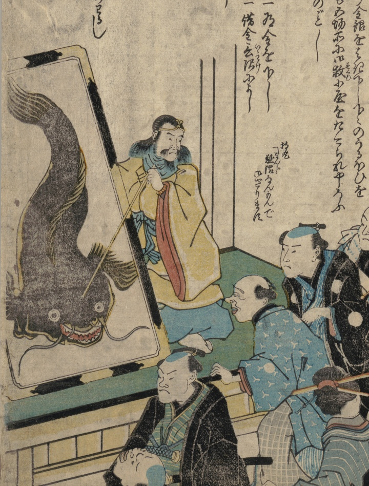

鹿島大明神が鯰の絵を指し、地震を薬に例えながら、その効能や禁忌を説明する。
著作者：不明／出典：親書誌：U426_nichibunken_0460：[ぢしんミやうさく下徳参]；ジシンミョウサクゲトクサン／日付：2025／資源識別子：U426_nichibunken_0460_0001_0000
Copyright (c)2010- International Research Center for Japanese Studies, Kyoto, Japan. All rights reserved.